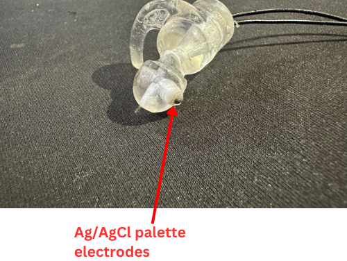
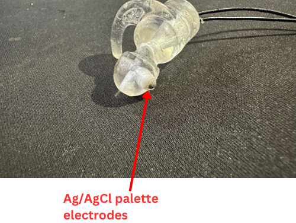

Project Overview
EarSense is my final year project in the Bachelor’s degree in Biomedical Engineering, aimed at designing an innovative generic dry electrode earpiece for collecting ear-EEG data. The objective was to address challenges associated with traditional scalp EEG acquisition by focusing on electrode selection and positioning, signal transmission, interference mitigation, signal processing, and integration into a simple brain-computer interface (BCI) application.

Project Background and Objectives
Traditional scalp EEG systems, though effective, are often bulky and can be uncomfortable for users. The goal of this project was to create a more compact and user-friendly solution without compromising signal quality. By designing an earpiece capable of collecting EEG data from within the ear canal, we aimed to provide a viable alternative to conventional systems. Key objectives included:
- Ensuring high-quality signal acquisition.
- Minimizing electromagnetic interference.
- Validating performance through comparative analysis with traditional scalp EEG systems.
- Demonstrating the feasibility of using the earpiece in a basic BCI application.
Methodology
To achieve our goals, we strategically placed Ag/AgCl palette electrodes within the ear canal to optimize skin contact and signal quality. Active shielding techniques were used to minimize resistance and improve signal acquisition. The earpieces were fabricated using Luxaprint, a material commonly used in hearing aids, to address initial manufacturing challenges. The design was rigorously tested through:
- Alpha attenuation testing: Evaluating the earpiece’s ability to detect changes in brain activity. This was primarily a visual test.
- Auditory mismatch negativity analysis: Comparing results from our device with those from traditional scalp EEG systems. This involved a quantitative approach.
 

Validation of Wide-Fit Ear-EEG Amplifier using Auditory Mismatch Negativity
This section details the validation process of our wide-fit ear-EEG amplifier using the auditory mismatch negativity (MMN) paradigm.
Experimental Design:
- Stimuli: We employed auditory stimuli designed to elicit an MMN response. This typically involves presenting a sequence of standard tones (1000Hz) interspersed with infrequent deviant tones (2000Hz).
Data Acquisition:
- Scalp EEG: Electroencephalographic (EEG) data was simultaneously recorded from the scalp using a conventional bio-amplifier (Octal Bioamp) to serve as a gold standard.
- Ear-EEG: EEG data was concurrently collected from our wide-fit earpiece amplifier.
Data Processing:
- Ensemble Averaging: For both scalp and ear-EEG data, we applied ensemble averaging to enhance the MMN response by eliminating background noise. This involves averaging the EEG responses time-locked to the presentation of the stimuli.
- P1-N1-P2 Segment Extraction: The P1-N1-P2 complex, a characteristic waveform associated with the MMN response, was extracted from the averaged waveforms. (P1, N1, and P2 represent specific peaks in the waveform).
Statistical Analysis:
- Hypothesis Testing: We conducted a t-test to evaluate the hypothesis (H₀) that there is "no linear relationship" between the P1-N1-P2 segment amplitudes obtained from the earpiece and the scalp recording. The alternative hypothesis (H₁) states that there is a "linear relationship" between the two results.
- Results: The p-value obtained from the t-test was approximately 0, indicating a statistically significant rejection of the null hypothesis (H₀). This suggests a strong linear relationship between the earpiece and scalp recordings.
- Correlation Analysis: The high correlation coefficients of 0.89, 0.85, and 0.71 from different people further support the presence of a robust linear association between the P1-N1-P2 amplitudes from both recording methods.
These findings demonstrate a strong positive correlation between the MMN responses measured from our wide-fit ear-EEG amplifier and the conventional scalp EEG recordings. This suggests that our earpiece effectively captures brain activity related to the MMN paradigm, providing a promising alternative for EEG data acquisition, particularly when scalp EEG placement might be impractical.
Brain-Computer Interface
We created a simplified Donchin speller matrix, where the subject focused on either 'Y' or 'N', representing 'yes' and 'no' responses. The letters blinked randomly, and event markers were captured. Trials lasted three minutes in a quiet environment, with EEG signals recorded during 'Y' and 'N' presentations.
Our goal was to predict where the person was looking. The target typically showed a dominant P300 signal. To enhance explainability, we used Grad-CAM, which highlights key areas of the input data influencing the model’s predictions, making the decision-making process more understandable and trustworthy. Grad-CAM also confirmed our results by highlighting regions around 300ms.
Using transfer learning, we applied scalograms of the mean signals for 'Y' and 'N'. We achieved 0.8 accuracy with AlexNet and 0.83 with ResNet50. After recording, the application displays the focused letter and its corresponding scalogram.
Results and Achievements
The earpiece demonstrated significant advancements in EEG data collection, including:
- Device Validation: Comparison with an octal bio-amp scalp EEG system showed strong correlation during auditory mismatch negativity tasks.
- Improved Signal Quality: Resistance was reduced to approximately 250 mΩ, a substantial improvement over the 3 kΩ resistance in previous attempts by a research team from the University of Moratuwa.
- BCI Implementation: Developed a basic version of Donchin’s speller matrix using P300 signals, enabling binary-stage button control via transfer learning.
- Enhanced Analysis: Scalograms of the P300 signals were paired with GradCam for improved interpretability of classification tasks.
- Innovative Design: Separation of reference and active electrodes between ears enhanced signal pickup, particularly in auditory and visual cortex regions.
Device specifications
- Wide-Fit Design: 3 ear piece sizes for broader usability.
- Reduced Impedance: From electrode to the PCB, the impedance is around 250 mΩ, which is a significant improvement.
- EEG Signal Acquisition: Captures brainwave activity through strategically placed electrodes within the earpiece.
- Battery Powered: Operates on two readily available 3.7V Lithium Ion batteries for portability and ease of use.
- WiFi Connection: Use WiFi to connect to a computer for real-time data transmission of collected EEG signals.
- Serial Port Connection: Use to update the firmware.
- Class II Medical Device (IEC 60601-1): Adheres to safety standards for moderate-risk medical devices.
- Type BF Applied Part: Electrodes meet strict leakage current standards for safe contact with the user's skin.
Recognition
Our project was awarded Best Undergraduate Thesis Project in the Signal Processing Domain in the "Undergraduate Thesis Project Competition - 2024," organized by the IEEE Signal Processing Society. The competition was held on November 30, 2024 at SLTC Research University. This recognition highlights the innovation and effort behind our work.
Conclusion
This project has established a strong foundation for future advancements in earEEG-based BCIs. Our innovative earpiece design not only improves signal quality and user comfort but also highlights the potential for developing compact and efficient brain-computer interaction systems.
I’m incredibly proud of what our team, Lahiru Shyamal, Yohan Abeysinghe, and Lakshan Rathnayake, have accomplished and excited about the potential future applications of our work. A huge thanks to our supervisors, Dr. Anjula De Silva and Dr. Chamira Edussooriya. Thanks to Dr. Anusha Withana for funding this project and Wickramarachchi Opticians and Hearing Care for providing us with facilities. Without their support, this wouldn’t have been a success.